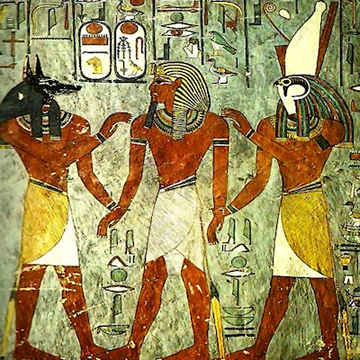
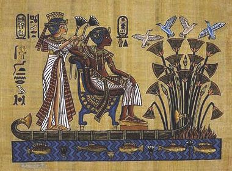

The Priest-King, the Temple, the Intermediary King between the Gods and Men.
As the man exercising the royal function of the divine right, the pharaoh plays, at least in theory, an important role on earth. It is he, in effect, who is responsible for assuring universal order conforming to Maat, the goddess of truth and justice, a child like him of the solar god of Ra. This conception, typically Egyptian, whist including both notions of truth and justice serves more functions. She applies herself to the task with excellence, established by the demi god from the first moment of creation.
If this order of divine origin comes to be disturbed, the forces of chaos, Isefet, could unleash themselves once more. He is thus constant and understands the movements of the stars, the sunrise, the duties to the gods and the dates of forthcoming floods, which was indispensable to the life of an Egyptian.
Relations between men – The essential function of the pharaoh is to maintain order. Firstly and above all, he must ensure the daily cult of the divine throughout Egypt. Thus, in all the temples of the country the cut is practiced in the name of the Pharaoh and the priest his mere delegate. In the scenes portrayed in the temple, it is always the king who is pictured accomplishing the divine daily ritual.
Chosen by the gods, the pharaoh is the intermediary between the gods and man. The divinities have designated him to build their temples, dress their altars, and recite their prayers to them. This is why it is the ruler alone who is represented opposite the gods on the temple walls.
In order to fill this vital role, the pharaoh needs a considerable vital force. His divine birthright is essential, but not enough. He acquires the extra powers necessary to achieve his function through the crowning rites when he takes the five names of his title. Then, the magical powers acquired by the pharaoh, thanks to sacred religious ceremonies, have a tendency to diminish little by little and after thirty years of rule, there is a special feast – “Sed”, the feast of the royal jubilee, which is given to restore the kings lost powers. The ‘Sed’ feast, celebrated under the patronage of the god Ptah of Memphis, retakes, to a lesser extent, the ceremonies of the sacred. The culmination of the feast is the twin crowning on the royal pavillion. To conclude this celebratory ritual, the Pharaoh proves his physical capacities by completing a special circuit. It has been asked; if this ceremony did not replace a primitive Egyptian rite, through which the king died ritually when, too old, he could not physically assume the royal duties. Others could follow the first ‘Sed’ feast; celebrated after thirty years, at shorter intervals, each time the Pharaoh felt the need to renew his strength.

World Appropriation: the victorious Pharaoh
As supreme chief of the army, the king would personally direct military expeditions with the aim of either pushing back an invading force or conquering new lands. To quell any up-risings and maintain order, he often delegated his powers to the generals and commanders of his garrison. He would outline the strategy to adopt of attack or defence. He is raised from childhood in the art of war. He learns to fire a bow, to wield a sword, lance or axe and drive a chariot.
Innumerable texts and pictures exalt his status as the chief of the army, which he carries out with astounding prowess. From the period of the ‘ New Empire ‘ onwards, the theme of the conquering hero becomes more metaphoric with the aim of demonstrating the power of the Pharaohs (topos). This theme was part of the official iconography of the royalty. From the ‘ New Empire ‘ onwards, the period of the conquests a special imagery was constructed placing the Pharaoh in battle, in his chariot, destroying his enemies.
The army is seen as a career from the ‘ New Empire’ onwards. (Thoutmosis 111, Ramses 11)
This is due to the invasion of Egypt by some groups coming from southern Palestine that the Greeks called ‘the Hyskos’ (from the Egyptian expression héquou Khasout, "the rulers of foreign countries”). This first foreign invasion of their lands traumatised the Egyptians as this meant, according to their ideology, the triumph of chaos over the universal order. Nevertheless, the Hyskos came with their horses and chariots bringing with them a perfect bronze weapon (their own arms at this time being made of leather).

The Palace, the Seat of Government
The residence is an architectural ensemble composed of an official part where the government sits and a more intimate part, the Royal Palace, which consists of private apartments for the royals and a part of the court. The official part is marked by some public rooms and the throne on which the king displays his capacity to rule.
The King is the owner of all the country (the richest man in Egypt). He gave up possession of a part of his lands to the temples, to his officials and to some high dignitaries in order to meet their needs and pay their employees. The Pharaoh also possessed mines and quarries of gold, stone, leather and semi-precious stones. He sent expeditions to exploit these resources. It is he who holds the monopoly on business at home and abroad.
As chief of government, the Pharaoh surrounds himself with ministers to help him. He delegates a part of his powers to the ‘vizir’, the equivalent of today’s home secretary. This minister is the most eminent man in the country after the Pharaoh. The council presided over by the king also consisted of a chief treasurer, Directors of Granaries and Livestock. Taken more from academic backgrounds than military, the royal civil servants made p the executive branch of the government and represented the efficient and machine-like Egyptian administration.

The Palace as a residence, the Court, the Royal Family
The Royal residence is the private part of the palace. As with most homes at this time, the palace where the king lived was made of crude brick. But it was set apart from the houses of other dignitaries and humbler houses by its much larger surface. It was also characterized by some architectural features in stone, columns, and thresholds and by the raised lintel of the door. Covered with mud and stucco these walls were sometimes adorned with nature inspired paintings.
In contrast to all conventional thinking, the harem was not a place where women lived, locked up, with no contact with the outside world. This was a place where in fact the queens, princes and princesses lived. One of the most famous harem was that of Gourob in Fayaoum. The Hareem was also close to the place of production for toiletries and linen.
It was at the time of Amenhotep III that life was at its most refined. The production of glass was one of high quality. It was made next to the royal residence and again, was a royal monopoly.
During the Armanian period, the royal family revealed its intimacy. Akhenaton and Nefertiti presented the image of a united household next to other Egyptian families. Although he had a loving relationship with Nefertiti, Amenhotep IV (Akhenton) had other wives starting with Queen Kuja, who gave him a daughter. After the death of Nefertiti towards the fourteenth year of his rule, the Pharaoh married to of his daughters. An example which was followed by Ramses II.
‘Maat is great and her action permanent. She has never been in trouble since the time of her creation. Where as there is punishment for those who transgress her laws’
‘She is the path for the inexperienced’

Source : Christiane Ziegler, Pharaon.